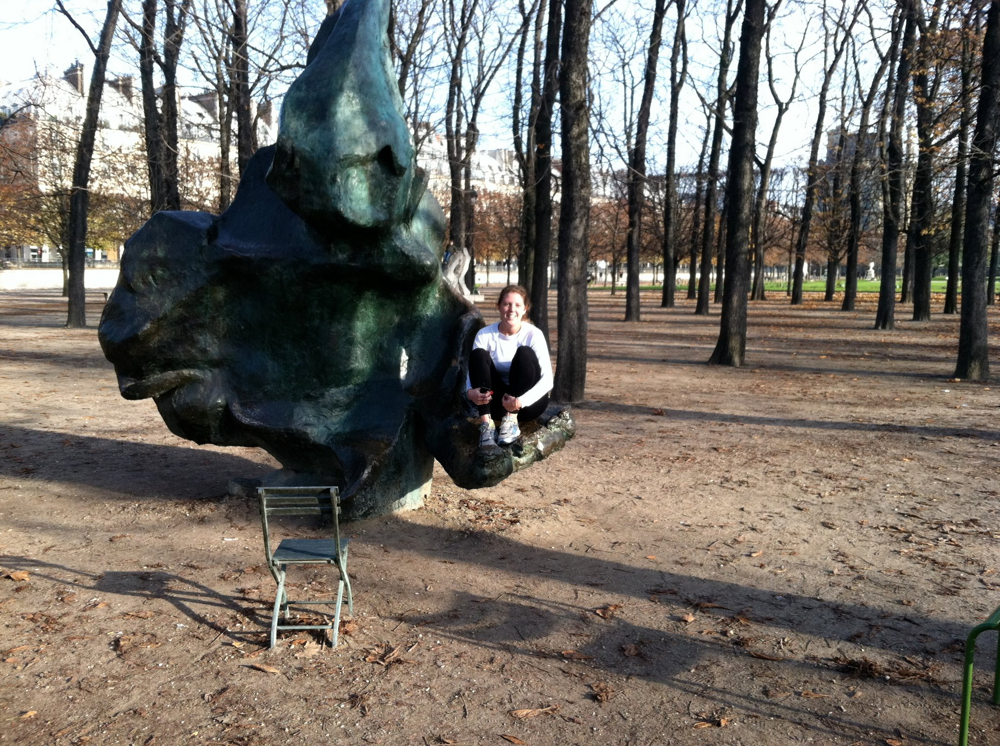
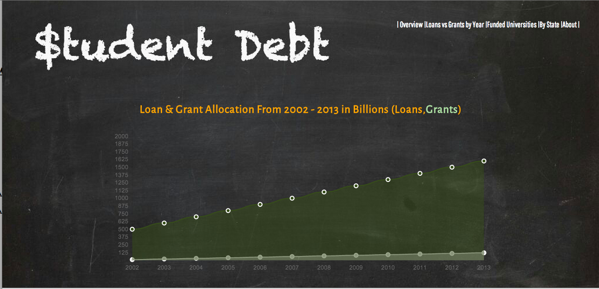
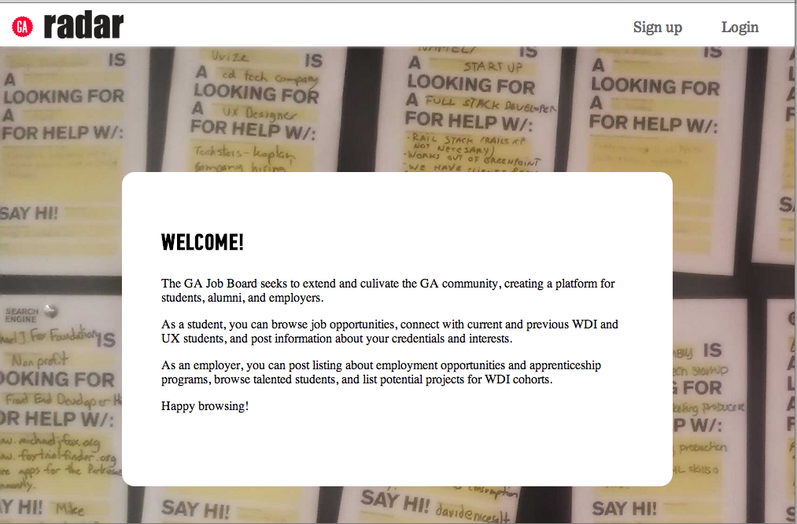
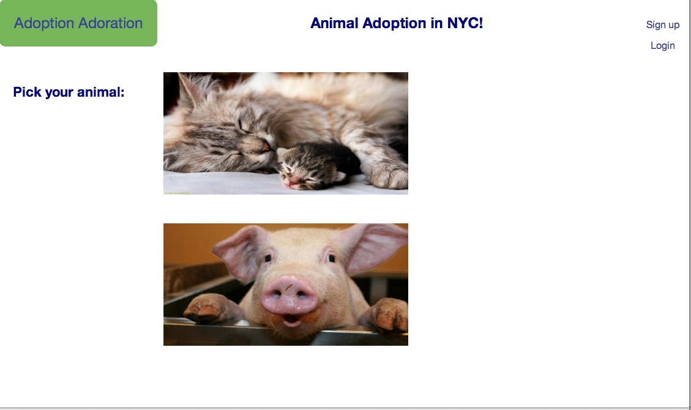

An Overview of A(M^2)
About Me
I'm a Fullstack Developer housed in Brooklyn, ever-curious about the intersection of tech, politics, and the environment. As a side project junkie, I love identifying the social side of tech, incorporating technology into communities. That falls somewhere between wireless organizing, open source advocacy, remote sensors and local music exploration.
Projects
Uncovering Student Debt
Wonder why everyone you know has student loans? This project analyzes datasets from the Department of Education, overviewing the national student debt since 2002.
Radar
If you're looking for a job (like most of General Assembly's Immersive students), there are probably days when you don't want to trek to campus to view opportunities from partner organizations. This project digitizes the GA job board so students and employers can connect and collaborate outside of the office!
Adopt.me
Adopt.me offers new ways to look at old pets! Using the Petfinder database, the site allows users to view animals up for adoption in New York City. You can add pets to your favorites, vote up an adorable cat or pup, and maybe even take one home with you!
Skills
Tech
Tech track: Linux (Ubuntu and RedHat), Mac OS, Windows, Ruby on Rails, Sintra, Backbone.js, jQuery, jQuery UI, Git, PostgreSQL 8/9, MySQL, Wordpress, Drupal, SEO, Google Analytics, Rspec, TDD, BDD, Scum, Agile, Pivotal Tracker, Basecamp
Topics & Hobbies
Social side: community controlled communications, tech, government transparency, open data, internet affordability, remote sensing, movement building, outdoor exploration